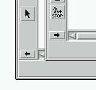

Tutorial Exercise 5.1: Starting the Graph Editor
The graph editor is an external application program that communicates with uDraw(Graph) by using the API. With the editor you can modify the structure of a graph that is currently loaded in uDraw(Graph), e.g. to interactively insert or delete nodes and edges. The responsibility of the graph editor (and any other uDraw(Graph) application) is to maintain the structure of the graph, whereas uDraw(Graph) can only visualize the graph, without any permission to manipulate the graph's structure on its own. This topic is discussed in detail in the API introduction.
The user does not see anything of this system interaction with two different processes communicating with each other. The user controls the application (i.e. the graph editor in this case) from inside the uDraw(Graph) user interface. The easiest way is to see the graph editor as a separate "plug-in" that extends the basic functionality of uDraw(Graph) and that runs in another process or even on another computer.
Before using the graph editor, you have to connect it to the API. This can be done in uDraw(Graph) at runtime by using menu File/Connect Application.... Another way is to start uDraw(Graph) on command-line with option -graphedit. When you use the menu, a file browser appears to let you select the executable file of the application program that should be connected. Of course, you cannot connect an arbitrary executable file here, because the application must be designed to communicate with uDraw(Graph) using the API protocol. The file name of the graph editor executable is "grapheditor(.exe)". You can find it in the "bin" directory of the uDraw(Graph) distribution. If you do not know where uDraw(Graph) is installed on your computer, then display the UDG_HOME environment variable in a command-line or ask your system administrator.
Now, move to the "bin" directory in the file browser and double-click on file "grapheditor(.exe)". This will open another dialog where you can specify the command-line options for the graph editor and the type of communication. Choose "TCP/IP Sockets" and press the connect button to start the editor. You can see the status message "GraphEditor 3.0 (Drag & Drop)" in the lower right footer area. The Edit menu is now enabled with a few new menu entries. The graph editor has added these entries to the user interface, but there are no functions behind for uDraw(Graph). When you select something in the "Edit" menu, uDraw(Graph) will send an information to the graph editor via the API. The editor knows what to do in this case (i.e. adding/deleting node or edges) and sends an appropriate graph update back to uDraw(Graph). You can also see some new icons on the icon bar of the uDraw(Graph) base window for quick access to the edit operations that are also available in the menu. Do not worry, the standard icons are still there. You can switch between the standard icons and the graph editor icons by using the small arrow that is located at the lower end of the icon bar.

Arrows to switch the icon bar
End of Exercise 5.1. Go back to the Section 5 Overview.